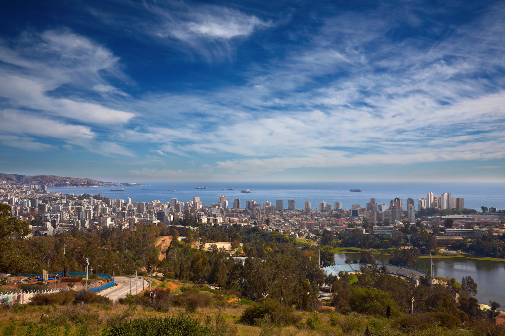
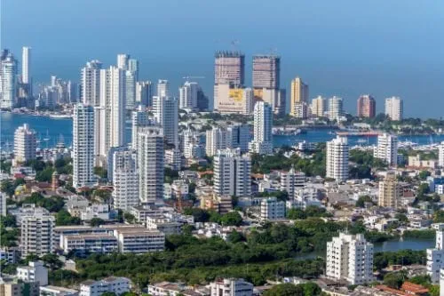
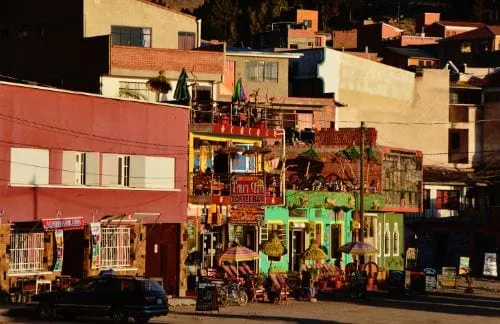
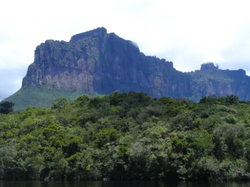
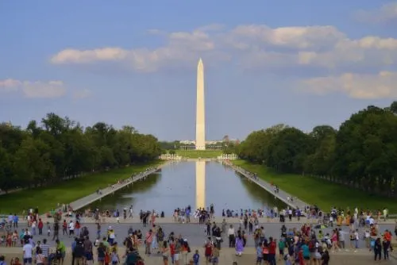

TurismoON: una página para tu paraíso
Le damos la bienvenida a nuestra TurismoON, el sitio que logra traerles a sus lectores
su paraiso personal. Este sitio recopila las maravillas del continente americano en distintas
secciones, con TurismoON usted puede buscar los sitios turísticos más importantes de cada
país, en estos momentos tenemos estos destinos:
En su morfología alargada, Chile guarda un sinfín de paraísos naturales que esperan a ser descubiertos. ¿Nos acompañas? Desde su capital, Santiago, al desierto, pasando por la melancólica Patagonia. Chile es un país bellísimo que pide a gritos ser explorado.
Encajado entre los Andes y el Pacífico, Chile se estira en busca de vida. Y lo consigue. Porque si algo ofrece este alargado país es una naturaleza casi salvaje que maravilla – y sorprende – a la mayoría de los viajeros que lo visitan.
Colombia es uno de los destinos turísticos más importantes de Sudamérica. Con un área conformada por selvas, bosques, manglares, campos, paradisíacas playas y parque naturales que lo convierten el segundo país más biodiverso del mundo.
Si eres un amante de la naturaleza, te gusta ir de excursión por destinos inimaginables, contemplar la diversidad de la gastronomía y conocer un patrimonio cultural único que se unen a la calidez de su gente, lo mejor es que visites Colombia, uno de los mejores sitios turísticos del mundo.
Bolivia posee un alto atractivo turístico, justo en el corazón de Suramérica. Su arraigada multiculturalidad ofrece distintas regiones de costumbres marcadas y esto a su vez se traduce en multiplicidad de gastronomías, geografías y una historia para contar a todos los turistas que se acercan hasta Bolivia.
Si bien es cierto, su capital, La Paz, es una ciudad bastante corriente y dentro de los vuelos en Suramérica, es el destino más costoso por su altura; también es cierto que el resto de las ciudades tiene mucho para ofrecer, en cuanto a zonas históricas y lugares naturales de alto impacto.
Playas, desiertos, montañas, llanos, ríos, bosques, ciudades, puentes, lagos, monumentos, Venezuela lo tiene todo para recorrerla, cuidarla y amarla.
Así que, no importa si eres mochilero, viajas en familia, con amigos o no quieres salir de la ciudad, en Venezuela conseguirás un sitio perfecto para visitar.
Estados Unidos es un país muy popular, asociado con la industria cinematográfica y los importantes comercios mundiales. Se encuentra en Norteamérica, a dos horas del norte de México y a una hora de Sur de Canadá.
Todo en el país te va a dejar maravillado, desde sus espectaculares Parques Nacionales, hasta sus ciudades lindas y llenas de rascacielos impresionantes y altos. Es un país para descubrir cosas nuevas y dejarte llevar con la historia de cada estado, como la herencia africana de las zonas el sur como Georgia y la tradición indígena en sitios como Wyoming y sus Reservas silvestres. Todo, evolucionado en el tiempo y como parte de la cultura de una gran nación.
1-Chile
En su morfología alargada, Chile guarda un sinfín de paraísos naturales que esperan a ser descubiertos. ¿Nos acompañas? Desde su capital, Santiago, al desierto, pasando por la melancólica Patagonia. Chile es un país bellísimo que pide a gritos ser explorado.
Encajado entre los Andes y el Pacífico, Chile se estira en busca de vida. Y lo consigue. Porque si algo ofrece este alargado país es una naturaleza casi salvaje que maravilla – y sorprende – a la mayoría de los viajeros que lo visitan.
2-Colombia
Colombia es uno de los destinos turísticos más importantes de Sudamérica. Con un área conformada por selvas, bosques, manglares, campos, paradisíacas playas y parque naturales que lo convierten el segundo país más biodiverso del mundo.
Si eres un amante de la naturaleza, te gusta ir de excursión por destinos inimaginables, contemplar la diversidad de la gastronomía y conocer un patrimonio cultural único que se unen a la calidez de su gente, lo mejor es que visites Colombia, uno de los mejores sitios turísticos del mundo.
3-Bolivia
Bolivia posee un alto atractivo turístico, justo en el corazón de Suramérica. Su arraigada multiculturalidad ofrece distintas regiones de costumbres marcadas y esto a su vez se traduce en multiplicidad de gastronomías, geografías y una historia para contar a todos los turistas que se acercan hasta Bolivia.
Si bien es cierto, su capital, La Paz, es una ciudad bastante corriente y dentro de los vuelos en Suramérica, es el destino más costoso por su altura; también es cierto que el resto de las ciudades tiene mucho para ofrecer, en cuanto a zonas históricas y lugares naturales de alto impacto.
4-Venezuela
Playas, desiertos, montañas, llanos, ríos, bosques, ciudades, puentes, lagos, monumentos, Venezuela lo tiene todo para recorrerla, cuidarla y amarla.
Así que, no importa si eres mochilero, viajas en familia, con amigos o no quieres salir de la ciudad, en Venezuela conseguirás un sitio perfecto para visitar.
5-Estados Unidos
Estados Unidos es un país muy popular, asociado con la industria cinematográfica y los importantes comercios mundiales. Se encuentra en Norteamérica, a dos horas del norte de México y a una hora de Sur de Canadá.
Todo en el país te va a dejar maravillado, desde sus espectaculares Parques Nacionales, hasta sus ciudades lindas y llenas de rascacielos impresionantes y altos. Es un país para descubrir cosas nuevas y dejarte llevar con la historia de cada estado, como la herencia africana de las zonas el sur como Georgia y la tradición indígena en sitios como Wyoming y sus Reservas silvestres. Todo, evolucionado en el tiempo y como parte de la cultura de una gran nación.
Página creada por Sergio Delgado
Urbe 2020
Urbe 2020